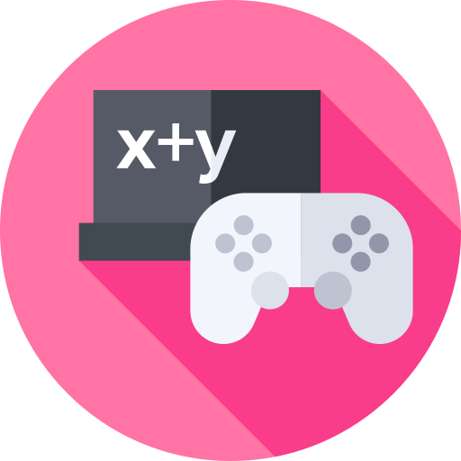

 Videjuegos como herramienta para mejorar el aprendizaje
08/11/2021
¿Como los videojuegos ayudan al aprendizaje?
Los videojuegos pueden ser una manera mas divertida y buena para aprender cierto tipo de cosas, además de que son muy entretenidos para todo tipo de publico desde niños hasta personas de la tercera edad, a continuación habrá un enumerado de cosas en las que te ayuda en el aprendizaje los videojuegos: 1 Mejoran la capacidad de respuesta en la que haces algo 2 Fomenta y ayuda al trabajo en equipo 3 Estimula la creatividad, la atención y la memoria visual 4 Enseña diferentes tipo de idiomas, a la larga vas aprendiendo cierto tipos de palabras de diferentes idiomas dependiendo el videojuego con el idioma que esta 5 Favorecen el pensamiento crítico

 Los videojuegos más reconocidos del mundo
Los videojuegos más reconocidos del mundo